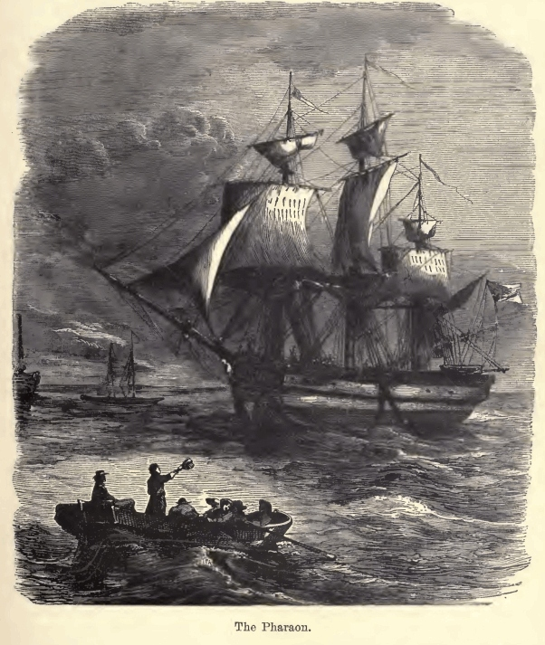
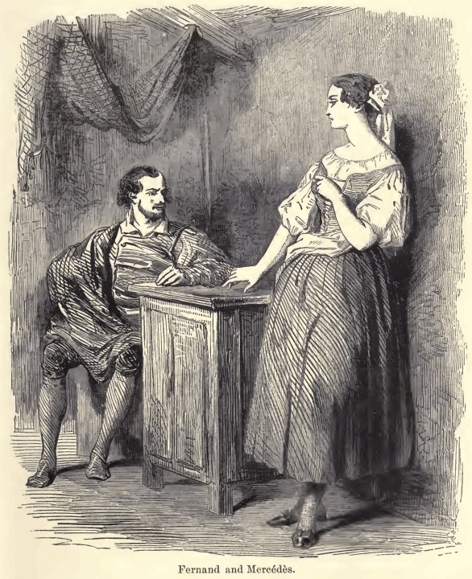
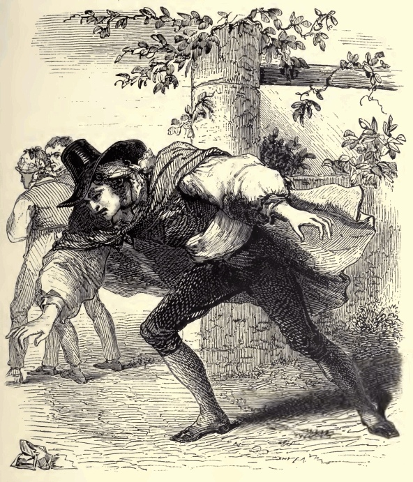
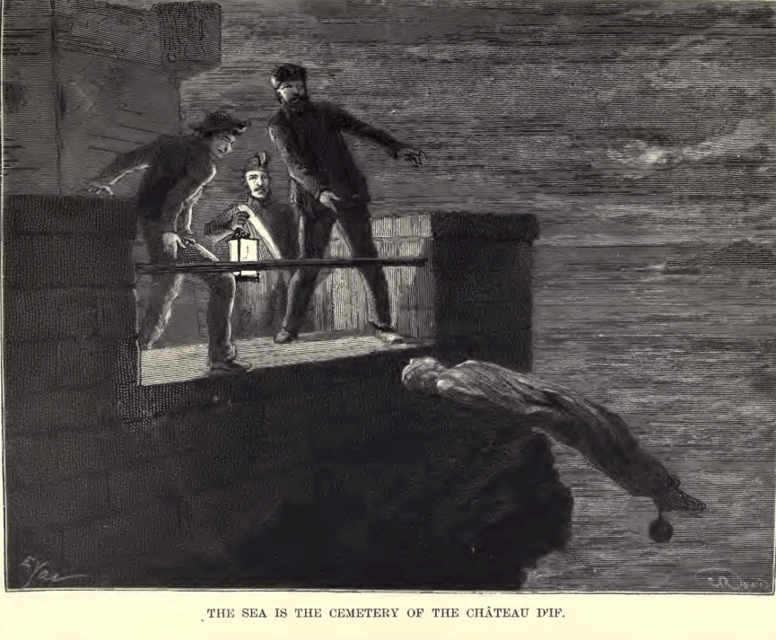

1815
Edmond Dantès
Um jovem marinheiro retorna a Marselha e reencontra seu pai.

Arquivo 03 · Ordem dos acontecimentos
Linha do tempo do romance. Períodos amplos evitam atribuir datas exatas a acontecimentos que aqui são resumidos.
Aviso: esta página revela acontecimentos e desfechos da história.
1815
Um jovem marinheiro retorna a Marselha e reencontra seu pai.
1815
A condução do navio após a morte do capitão revela sua competência e desperta inveja.

1815
O reencontro com a noiva prepara a celebração interrompida pela prisão.

1815
Uma acusação política dá forma à conspiração contra Edmond.

1815–1829
A prisão injusta interrompe sua vida durante quatorze anos.

Durante o cativeiro
Outro prisioneiro se torna amigo, professor e referência afetiva.

Durante o cativeiro
Línguas, ciência e história ampliam os recursos de Edmond.

Antes da fuga
Faria transmite o segredo da fortuna dos Spada; a descoberta material virá depois da fuga.

1829
Após a morte do abade, Edmond ocupa seu lugar no saco funerário e escapa pelo mar.

1829
Na ilha, Edmond encontra o tesouro indicado por Faria.

Após 1829
A fortuna sustenta novas identidades e anos de preparação.

1838
O conde entra na sociedade em que vivem seus antigos adversários.

1838
Revelações e operações cuidadosamente preparadas atingem reputações, fortunas e famílias.

1838
O sofrimento de inocentes põe em crise a certeza de que o plano seria justo.

Desfecho do romance
A reunião de Valentine e Maximilien e a partida de Edmond abrem a possibilidade de recomeçar.